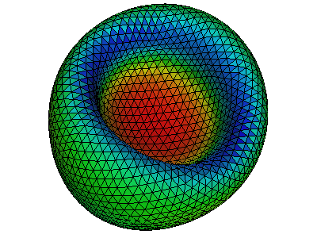
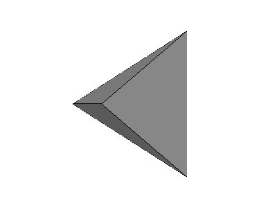
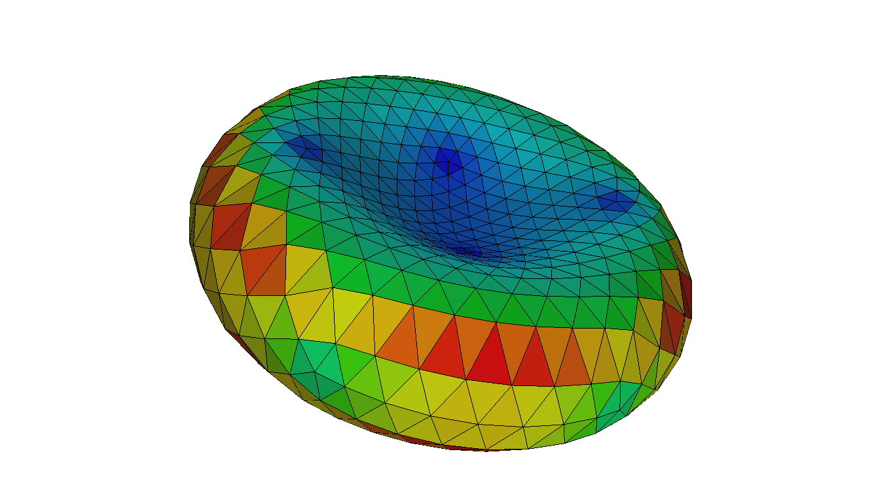

Corpuscles is a C library to resolve the elastic energy and force of a membrane surface, which is represented by an unstructured triangulated mesh. It also simulates transformations between different configurations/shapes of a closed membrane by a minimization procedure under various constraints.
Various components can be switched on/off at will, such asFor different components, variations of model/law can be selected such as Helfrich/spontaneous curvature model for bending elasticity and Skalak law for strain elasticity.
For different models/laws, variations of schemes impelemented can also be choosen such as Gompper and Kroll scheme and Juelicher scheme for the bending model of spontaneous curvature. See more details in https://cselab.github.io/corpuscles
Minimal dependencies are C and Force 90 compilers, GNU Scientific Library, and pkg-config.
Optional dependencies geomview, maxima, and pandoc.
Adjust conf.mk if you want to change defaults
$ cat conf.mk CC = gcc FC = gfortran FCFLAGS = -O2 -g FXFLAGS = -fallow-argument-mismatch GSL_CFLAGS = " `gsl-config --cflags `" GSL_LDFLAGS = " `gsl-config --libs `" CFLAGS = -O2 -g LDFLAGS = PREFIX = $(HOME)/.local DATAPATH = $(HOME)/.co MAXIMA_HOME = $(HOME)/.maxima # prefix for commands P = co
PREFIX/bin should be on the path, for example
$ cat $HOME/.bashrc PATH="$HOME/.local/bin:$PATH"Library is installed under the path
PREFIX. Run
$ MAKEFLAGS=-j4 ./install.shIf you have atest you can run
$ make test
You can also use a docker containter.
A program in example/hello computes area of a triangle.
$ cat main.c
#include <stdio.h>
#include <real.h>
#include <co/tri.h>
#define FMT CO_REAL_OUT
int
main(void)
{
real A, a[] = { 0, 0, 0 }, b[] = { 2, 0, 0 }, c[] = { 0, 1, 0 };
A = tri_area(a, b, c);
printf("Area is of triangle: " FMT "\n", A);
}
$ cat Makefile
include ../../conf.mk
PREC = d
main: main.c
$(CC) main.c $(CFLAGS) `co.conf --cflags --libs $(PREC) ` $(LDFLAGS) -o $@
clean:; rm -f main
Corpuscles reads OFF files. Here is a file with triangular pyramid.

This program reads an OFF file from an input stream:
$ cat main.c
#include <stdio.h>
#include <real.h>
#include <co/array.h>
#include <co/he.h>
#include <co/y.h>
#define FMT CO_REAL_OUT
int main(void) {
real *x, *y, *z, hi;
He *he;
int nv, nt;
y_inif(stdin, &he, &x, &y, &z);
nv = he_nv(he);
nt = he_nt(he);
hi = array_max(nv, x);
printf("number of vertices is %d\n", nv);
printf("number of triangles is %d\n", nt);
printf("maximum x coordinate: " FMT "\n", hi);
y_fin(he, x, y, z);
}
$ make $ ./main < `co.path`/regular/tetra.off number of vertices is 4 number of triangles is 4 maximum x coordinate: 1
Read off, compute area fro every triangle, and output off file with colors (example/off/write/area)
$ cat main.c
#include <stdio.h>
#include <real.h>
#include <co/area.h>
#include <co/err.h>
#include <co/off.h>
#include <co/he.h>
#include <co/memory.h>
#include <co/y.h>
int main(void) {
int nt;
real *x, *y, *z, *a;
He *he;
y_inif(stdin, &he, &x, &y, &z);
nt = he_nt(he);
CALLOC(nt, &a);
he_area_tri(he, x, y, z, a);
boff_tri_fwrite(he, x, y, z, a, stdout);
y_fin(he, x, y, z);
FREE(a);
}
$ ./main < $(co.path)/rbc/laplace/0.off > out.off
To see the results
$ co.geomview -r 55.9195 -13.672 8.69021 -f 25.0389 out.off

We use a wrapper to geomview.
$ co.geomview -h
co.geomview [-t x y z] [-r x y z] [-a APPEARANCE] [-o FILE] [OFF]..
he geomview wrapper
-t x y z translation
-r x y z rotation in degree
-f zoom field of view (default is 40)
-a APPEARANCE load appearance from a file
-o FILE write FILE and exit
-O write all PPM files and exit
-OO write all oogl files and exit
-format ppmscreen|ppm|ps|ppmosmesa|ppmosglx
-p command process every off file by running 'command ' < IN.off > OUT.off
-n none|each|all|keep normalization status (see geomview manual)
-c command run command on every file and write output to stderr, %f is replaced by a file name
-e command if keys 'e ' is pressed runs
'<OFF command -t x y z -r x y z -f zoom -i [index of a file] -n [number of files] ' or
'<OFF command ' if -e '|command ' is passed
-i command run command on every image, %i replaced by input; %o -- by output; %b --- by basename
Keys:
q: quit
s: save snap.ppm
S: save every snapshot
e: run command on OFF file (see -e option)
p: panel
j/k: switch between off files
J: dump file name
[SPC]: dump orientation and field of view
Environment variables:
WX, WY: resolution of the snapshot (default: 800x600)
BACKGROUND: default ( '1 1 1 ')
GEOMVIEW_ARGS: pass to geomview
Examples:
co.geomview -t 0.25 0.25 0 data/rbc.off
co.geomview -a data/appearance data/rbc.off
co.geomview -o snap.ppm data/rbc.off
co.geomview data/rbc.off data/sph.off
co.geomview -p co.orient data/rbc.off data/sph.off
co.geomview -c off.volume data/rbc.off data/sph.off
argv and shift
git pages docs/index.html is generated from README.md.m4. To update run
$ make html
requires pandoc.
Bian, X., Litvinov, S., & Koumoutsakos, P. (2020). Bending models of lipid bilayer membranes: Spontaneous curvature and area-difference elasticity. Computer Methods in Applied Mechanics and Engineering, 359, 112758. doi:10.1016/j.cma.2019.112758